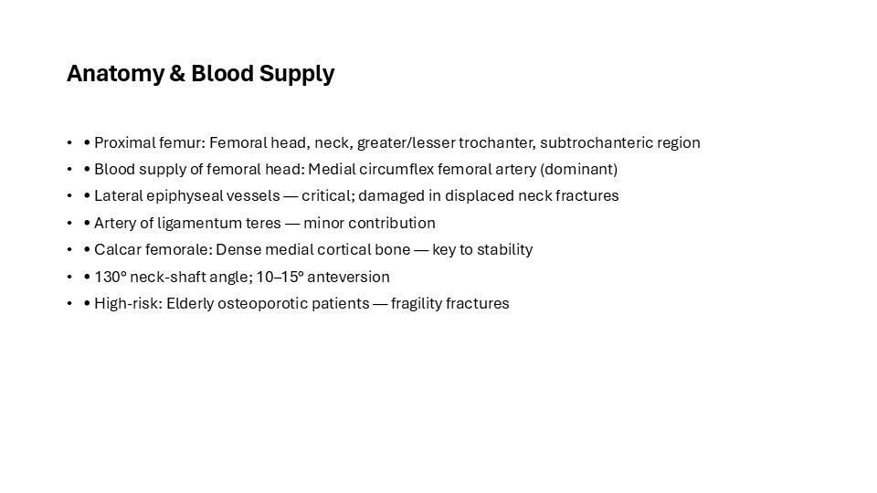
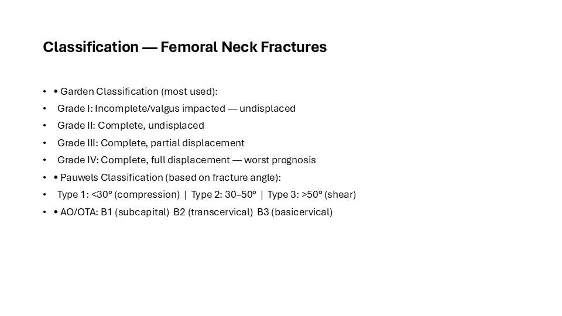
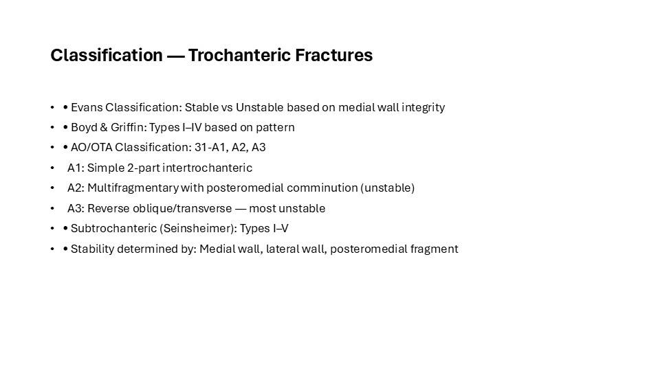
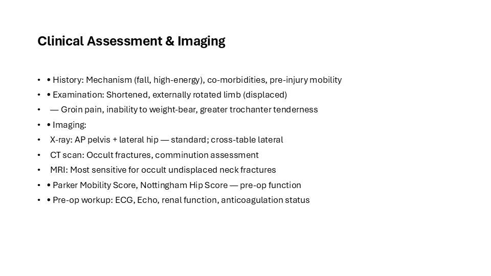
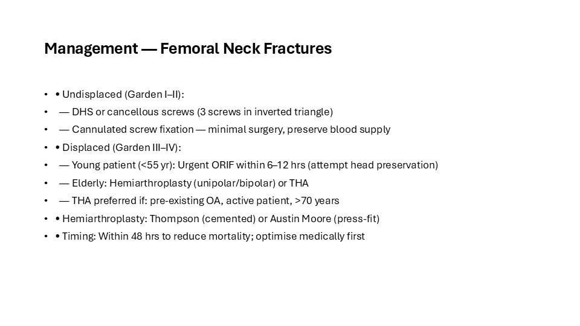
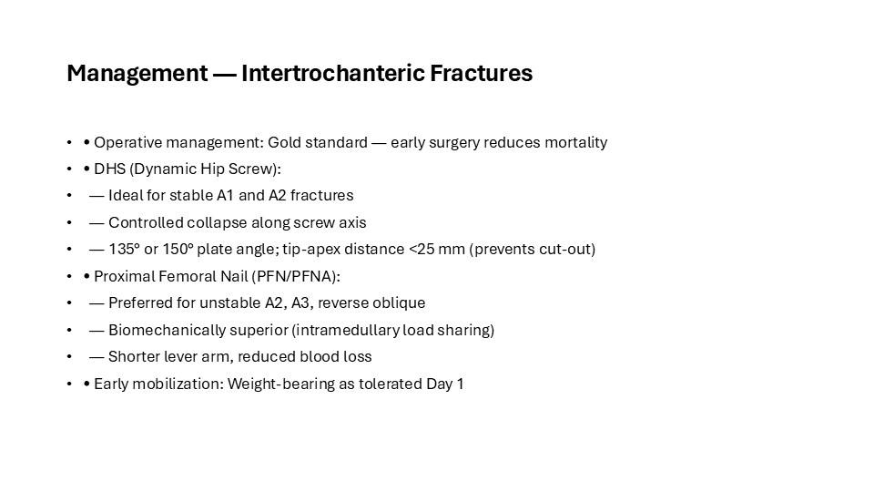
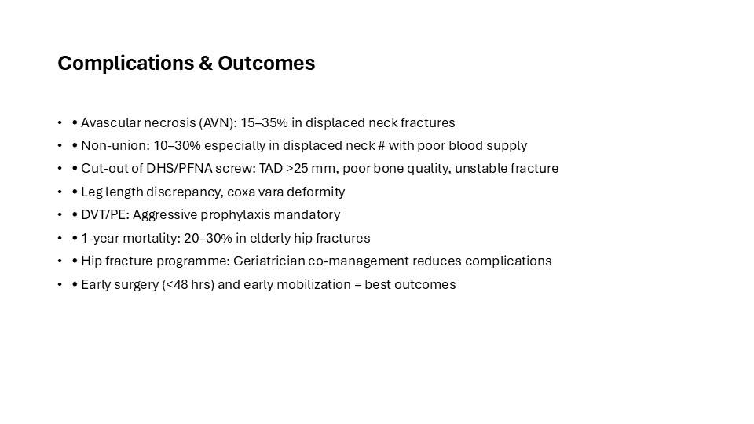
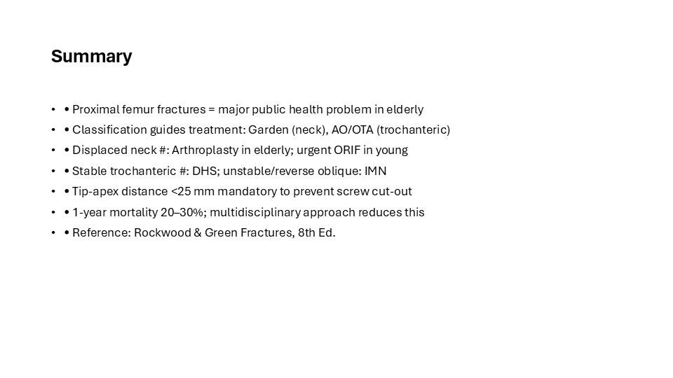

This is the full illustrated version of a teaching presentation prepared by Dr. Maninder Singh (GMCH Amritsar). Every slide is shown below with its text, so you can read it like an article — or download the original PowerPoint (.pptx) to teach from it. Topics covered include: Classification — Femoral Neck Fractures; Classification — Trochanteric Fractures; Clinical Assessment & Imaging; Management — Femoral Neck Fractures; Management — Intertrochanteric Fractures; Complications & Outcomes; Summary.
Contents — jump to a slide (8)

Anatomy & Blood Supply
- • Proximal femur: Femoral head, neck, greater/lesser trochanter, subtrochanteric region
- • Blood supply of femoral head: Medial circumflex femoral artery (dominant)
- • Lateral epiphyseal vessels — critical; damaged in displaced neck fractures
- • Artery of ligamentum teres — minor contribution
- • Calcar femorale: Dense medial cortical bone — key to stability
- • 130° neck-shaft angle; 10–15° anteversion
- • High-risk: Elderly osteoporotic patients — fragility fractures

Classification — Femoral Neck Fractures
- • Garden Classification (most used):
- Grade I: Incomplete/valgus impacted — undisplaced
- Grade II: Complete, undisplaced
- Grade III: Complete, partial displacement
- Grade IV: Complete, full displacement — worst prognosis
- • Pauwels Classification (based on fracture angle):
- Type 1: <30° (compression) | Type 2: 30–50° | Type 3: >50° (shear)
- • AO/OTA: B1 (subcapital) B2 (transcervical) B3 (basicervical)

Classification — Trochanteric Fractures
- • Evans Classification: Stable vs Unstable based on medial wall integrity
- • Boyd & Griffin: Types I–IV based on pattern
- • AO/OTA Classification: 31-A1, A2, A3
- A1: Simple 2-part intertrochanteric
- A2: Multifragmentary with posteromedial comminution (unstable)
- A3: Reverse oblique/transverse — most unstable
- • Subtrochanteric (Seinsheimer): Types I–V
- • Stability determined by: Medial wall, lateral wall, posteromedial fragment

Clinical Assessment & Imaging
- • History: Mechanism (fall, high-energy), co-morbidities, pre-injury mobility
- • Examination: Shortened, externally rotated limb (displaced)
- — Groin pain, inability to weight-bear, greater trochanter tenderness
- • Imaging:
- X-ray: AP pelvis + lateral hip — standard; cross-table lateral
- CT scan: Occult fractures, comminution assessment
- MRI: Most sensitive for occult undisplaced neck fractures
- • Parker Mobility Score, Nottingham Hip Score — pre-op function
- • Pre-op workup: ECG, Echo, renal function, anticoagulation status

Management — Femoral Neck Fractures
- • Undisplaced (Garden I–II):
- — DHS or cancellous screws (3 screws in inverted triangle)
- — Cannulated screw fixation — minimal surgery, preserve blood supply
- • Displaced (Garden III–IV):
- — Young patient (<55 yr): Urgent ORIF within 6–12 hrs (attempt head preservation)
- — Elderly: Hemiarthroplasty (unipolar/bipolar) or THA
- — THA preferred if: pre-existing OA, active patient, >70 years
- • Hemiarthroplasty: Thompson (cemented) or Austin Moore (press-fit)
- • Timing: Within 48 hrs to reduce mortality; optimise medically first

Management — Intertrochanteric Fractures
- • Operative management: Gold standard — early surgery reduces mortality
- • DHS (Dynamic Hip Screw):
- — Ideal for stable A1 and A2 fractures
- — Controlled collapse along screw axis
- — 135° or 150° plate angle; tip-apex distance <25 mm (prevents cut-out)
- • Proximal Femoral Nail (PFN/PFNA):
- — Preferred for unstable A2, A3, reverse oblique
- — Biomechanically superior (intramedullary load sharing)
- — Shorter lever arm, reduced blood loss
- • Early mobilization: Weight-bearing as tolerated Day 1

Complications & Outcomes
- • Avascular necrosis (AVN): 15–35% in displaced neck fractures
- • Non-union: 10–30% especially in displaced neck # with poor blood supply
- • Cut-out of DHS/PFNA screw: TAD >25 mm, poor bone quality, unstable fracture
- • Leg length discrepancy, coxa vara deformity
- • DVT/PE: Aggressive prophylaxis mandatory
- • 1-year mortality: 20–30% in elderly hip fractures
- • Hip fracture programme: Geriatrician co-management reduces complications
- • Early surgery (<48 hrs) and early mobilization = best outcomes

Summary
- • Proximal femur fractures = major public health problem in elderly
- • Classification guides treatment: Garden (neck), AO/OTA (trochanteric)
- • Displaced neck #: Arthroplasty in elderly; urgent ORIF in young
- • Stable trochanteric #: DHS; unstable/reverse oblique: IMN
- • Tip-apex distance <25 mm mandatory to prevent screw cut-out
- • 1-year mortality 20–30%; multidisciplinary approach reduces this
- • Reference: Rockwood & Green Fractures, 8th Ed.
Use this deck in your teaching
The original editable PowerPoint is free to download for non-commercial teaching, with credit to the author. Questions or corrections? Contact us.
About this deck
Prepared by Dr. Maninder Singh (MS Orthopaedics, Associate Professor, GMCH Amritsar) for postgraduate and clinical teaching. Where images are from open-licence sources (for example Wikimedia Commons), the licence and author appear on the slide. See our editorial policy. Educational use only — not medical advice; see Terms & Medical Disclaimer.